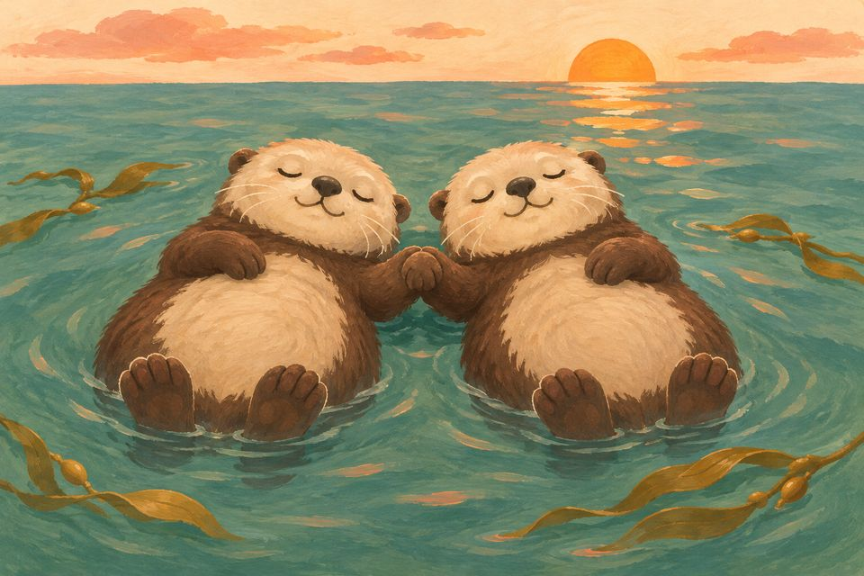

听力听过的所有素材，全部同步转为阅读素材，实现「先听懂、再读懂」的闭环降维学习方案 四 · 核心规则
2. 小学中阶短文阶段策略方案 四 · 全阶分层阅读策略（小标题和它下面的三条）
关键词定位（Keyword Spotting）
上下文猜词（Context Clues）
自我理解监控（Self-Questioning）
阅读策略专项AI引导：预测、猜词、圈画关键词、概括自测方案 七
阅读策略分层植入，根治中国学生“看得懂、做不对题”痛点方案 九
阅读素材进阶路径方案 四（小标题和下面那一行，后半行省略）
自研组合绘本 → 短篇故事/科普短文 → KET篇章 → PET篇章 → ……
AI游戏化闯关、积分徽章、趣味交互，解决坚持问题方案 七
老师只是服务，教学由系统主要完成。孩子有卡点的时候老师再答疑就行。微信原话
全维度学情数据看板：听、说、读、写、语法、策略掌握度可视化方案 七

You are reading. Then you see a new word: drift. What do you do?
读着读着，碰到一个生词：drift。怎么办？
Don't stop. Don't skip it. Use context clues — the words around it.
别停下，也别跳过。用上下文线索——它周围的词。
Step one. Circle the word.
第一步：把生词圈出来。
Step two. Read around it. The sentence before, and the sentence after.
第二步：读它的前一句和后一句。
Step three. Find the clues. The sea is always moving. The water slowly carries it far from its family.
第三步：找线索。海一直在动；水慢慢把它带到离家人很远的地方。
Step four. Guess. Drift means: the water slowly moves it away.
第四步：猜。drift 就是「被水慢慢带走、漂走」。
Now check. Read it again with your guess. A sleeping otter can slowly move away with the water. Yes — it makes sense!
放回去再读一遍：读得通，猜对了。
Circle. Read around. Find clues. Guess and check. Now it's your turn!
圈出来、读前后、找线索、猜了再验。轮到你了！